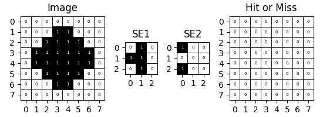

Plugins
plot_morphology
Description:
plot_morphology is a utility function for visualizing grayscale morphological images with several customizable options, including grid overlays, pixel value display, and axis numbering. It allows fine-tuning of figure scaling, making it adaptable to various visualization needs.
Function Signature:
def plot_morphology(images: List[Matrix], titles: List[str],
draw_border=True, show_numbers=False,
show_axis=False, figure_scale=0.7):
Parameters:
-
images(list of matrices):
A list of 2D arrays representing grayscale images. Each array is displayed as a separate subplot. -
titles(list of str):
Titles corresponding to each image, appearing above each subplot. -
draw_border(bool, default=True):
IfTrue, draws a border grid around each pixel for clearer pixel boundary inspection. -
show_numbers(bool, default=False):
IfTrue, displays the value of each pixel inside its cell, useful for exact pixel inspection. -
show_axis(bool, default=False):
IfTrue, shows numbering on the x and y axes, which aids in locating specific pixel positions. -
figure_scale(float, default=0.7):
A scale factor for adjusting the overall figure size. Valid values range from 0 to 1. Higher values increase the plot size.
Usage Example:
from DIP.morphology import hit_or_miss
bit_dipth = 4
im = [[0,0,0,0,0,0,0,0],
[0,0,0,1,1,0,0,0],
[0,0,1,1,1,1,0,0],
[0,1,1,1,1,1,1,0],
[0,1,1,1,1,1,1,0],
[0,0,1,1,1,1,0,0],
[0,0,0,1,1,0,0,0],
[0,0,0,0,0,0,0,0]]
se1 = [[0,1,0],
[1,1,0],
[0,1,0]]
se2 = [[1,0,0],
[0,0,0],
[1,0,0]]
result = hit_or_miss(im, se1, se2)
plot_morphology([im, se1, se2, result], ['Image', 'SE1', 'SE2', 'Hit or Miss'],
draw_border=True, show_numbers=True, show_axis=True, figure_scale=0.5)

Notes:
- The function applies a
gray_rcolormap, mapping0to white and1to black. - If only a single image is provided, it’s wrapped in a list to ensure compatibility.
- For better performance with large images, consider setting
draw_border=Falseor adjustingfigure_scale.
Dependencies:
you need to install matplotlib to use this plugin
python -m pip install matplotlib==3.9.0
Returns:
This function does not return a value; it directly displays the plot using plt.show().